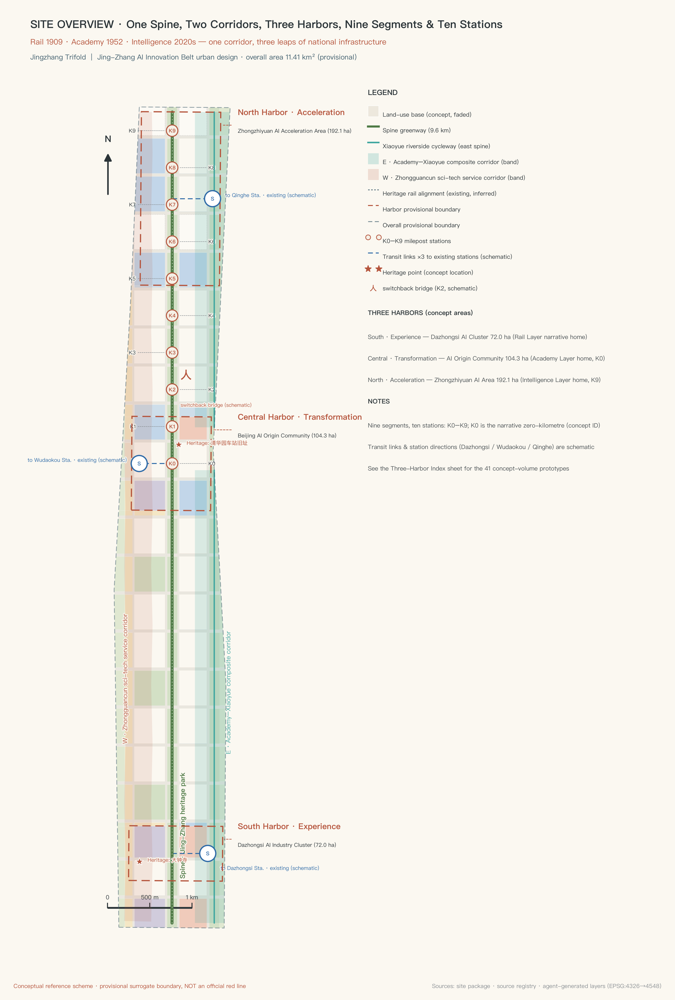
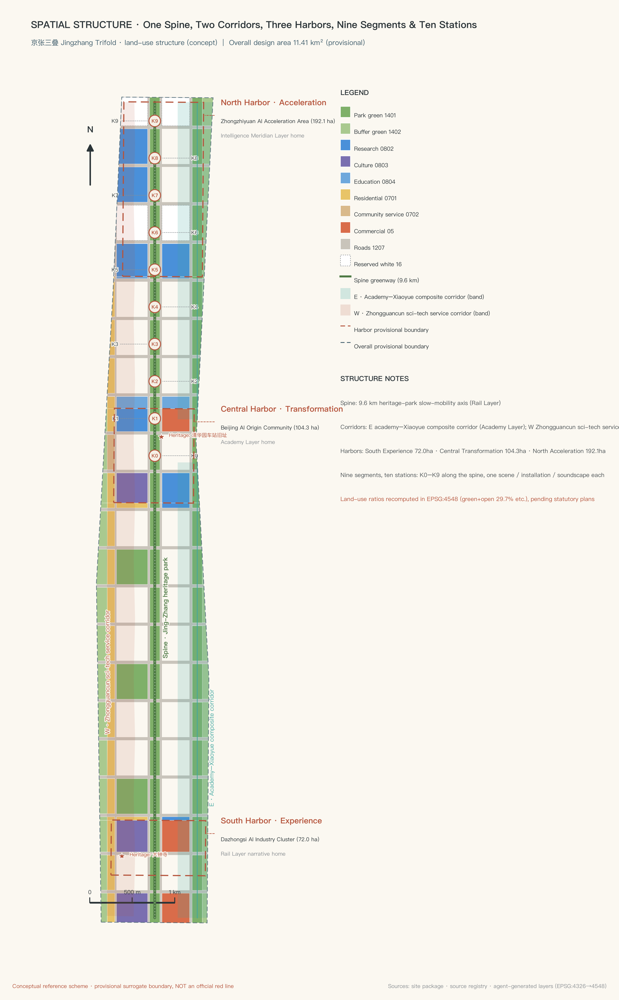
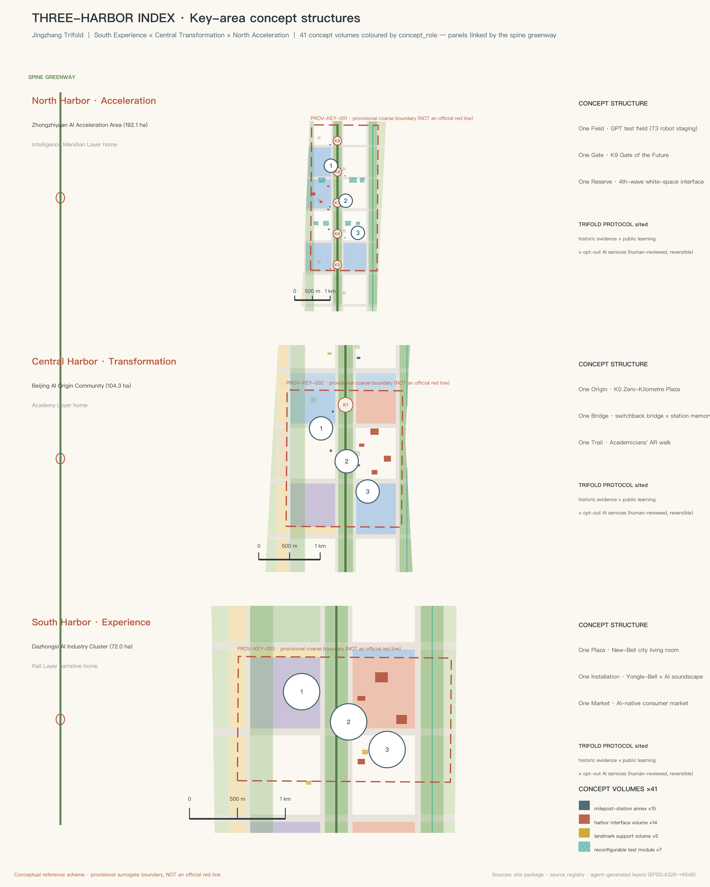
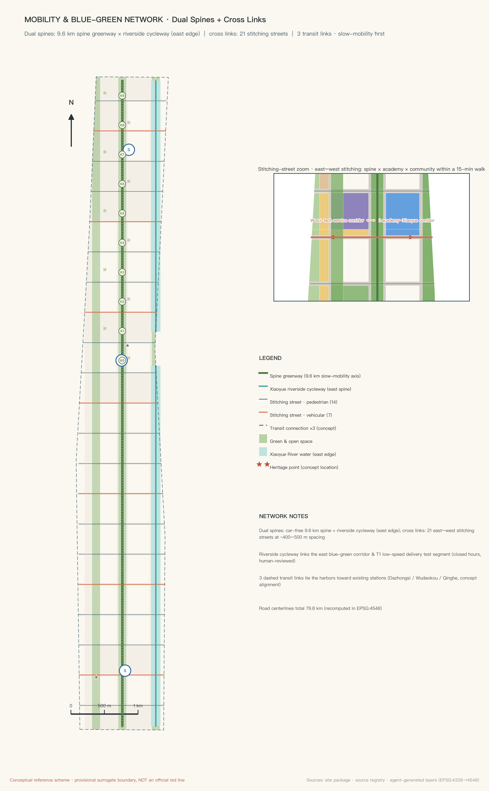
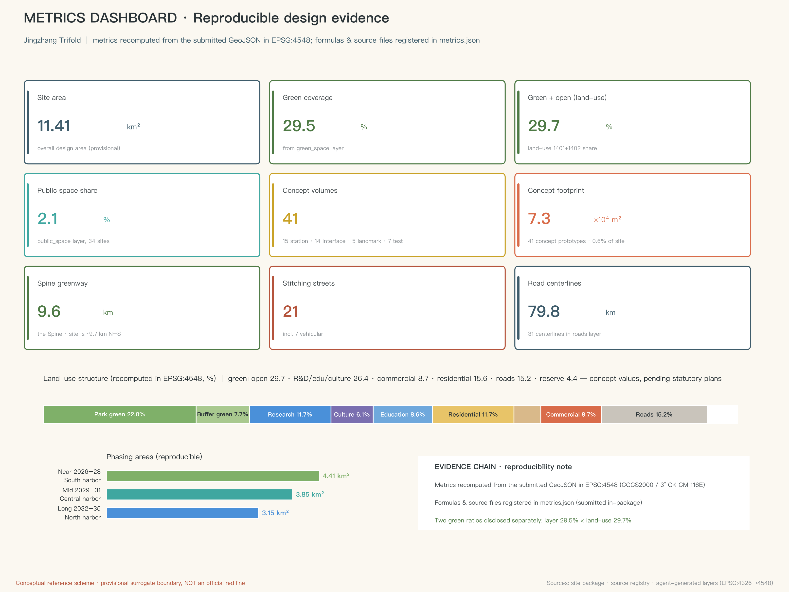

Jingzhang Trifold: Rail · Academy · Intelligence Meridian — A Conceptual Urban Design Proposal for the Centennial Jing-Zhang AI Innovation Belt
Centered on the concept of the 'Trifold': this corridor overprints three national basic-capability leaps — the Rail Layer (the first trunk railway designed and built by Chinese engineers, 1909), the Academy Layer (the 1952 reorganization of university departments and the systematic deployment of a knowledge network in the Eight Colleges of Xueyuan Road), and the Intelligence Meridian Layer (the contemporary AI innovation cluster, with interfaces reserved for the next general-purpose technology). The proposal organizes space through One Spine, Two Corridors, Three Harbors, and Nine Segments, Ten Stations, using K0–K9 station markers, public memory nodes, ten scenario cards, and a three-generation narrative to build the AI innovation belt into an urban living room that ordinary people can use every day. All spatial conclusions are based on a provisional boundary and are conceptual recommendations only.
Jingzhang Trifold: Rail · Academy · Intelligence Meridian — A Conceptual Urban Design Proposal for the Centennial Jing-Zhang AI Innovation Belt
Concept overview: In 1909, the first trunk railway designed and built by Chinese engineers departed from here; in 1952, the young republic concentrated the "Eight Colleges" along Xueyuan Road to the east; today, artificial intelligence is clustering here. This proposal argues that these are not three collaged pieces of history, but the overprinting of three national basic-capability leaps onto the same corridor — the Rail Layer built a "network of human mobility," the Academy Layer built a "network of knowledge production," and the Intelligence Meridian Layer is now building a "network of intelligent services." Jingzhang Trifold overprints these three leaps into a walkable, readable, and continuously growing urban innovation belt. (Note on naming: "Jingzhang Trifold" is retained as a brand proper noun; in project and railway compound names, the official terminology renders 京张 as "Jing-Zhang" with a hyphen.) All spatial recommendations in this proposal are conceptual recommendations and reference schemes; they may be further developed by professional teams, do not replace statutory planning, and do not constitute any government-approved conclusion.
Design Basis and Source List
The primary basis of this proposal is the pre-qualification announcement issued by the Haidian Branch of the Beijing Municipal Commission of Planning and Natural Resources, which defines the project name, the three-level scope, the three key areas, and the design tasks Source. The agent-oriented taskbook defines the ten co-creation charter articles, six agent tasks, and unified boundary clauses; the concept, scenarios, branding, and operations content of this proposal are all developed within its framework Source. The site information package provides the enumerations, metric ranges, standard snapshots, and provisional boundary that form the generative basis for all machine-readable deliverables Source.
The use of sources strictly follows the usage grading of the public source registry: formal judgments cite only materials whose usable_for_formal flag is "yes"; background materials are used solely for contextual understanding; provisional boundary materials are used only for generation, visualization, and discussion Source. Processed materials in the reading-navigation layer are used only to organize reasoning; all factual judgments return to the original registered sources Source.
It must be stated honestly: as of this submission, the organizer has not released the official precise boundary or key-area polygons. The site boundary and the three key areas in this proposal all adopt the Provisional Boundary registered in the repository. It is used only for AI generation, visualization, and local self-checking, and must not be interpreted as an official planning boundary, a basis for approval, or a basis for precise area figures; once the official polygons are published, land use, buildings, roads, green space, public space, phasing, and all area metrics must be recalculated. This organizer data gap does not block content scoring Spatial data.

The machine-audit layer of this proposal is fully preserved in sources.json, metrics.json, compliance_matrix.json, standard_matrix.json, design_depth_matrix.json, and geometry/*.geojson; the main text annotates only one to three pieces of direct evidence beside key judgments. Any area or ratio can be recalculated from the submitted GeoJSON under the EPSG:4548 projection Metric.
Three-Level Scope Framework
The three scope levels correspond to three depths of work, and also to the three observation scales of the "Trifold" concept Depth.
Coordinated Research Area (approx. 43.6 sq km): bounded by the North Fifth Ring Road to the north, the Beijing–Tibet (Jingzang) Expressway to the east, Xizhimen Outer Street to the south, and Wanquanhe Road to the west. At this level, the proposal answers "why here": the overprinting relation of the Rail Layer, the Academy Layer, and the Intelligence Meridian Layer holds true at the regional scale — the Xueyuan Road university cluster, the Zhongguancun Science City hinterland, and the Qinghe–Jingzang Expressway corridor together form an innovation collaboration network, and this belt is its north–south historical-innovation main axis. This level covers only industrial strategy, regional coordination, and future-city research; it draws no spatial siting conclusions.
Overall Design Area (approx. 11.4 sq km): the urban districts and industrial zones within roughly 1–2 km around the Jing-Zhang Railway Heritage Park. This level reaches the urban-design depth of Regulatory Detailed Planning; it is where the spatial structure of "One Spine, Two Corridors, Three Harbors, Nine Segments, Ten Stations" is sited, and it is the effective range of the land-use, building, transport, blue-green, and phasing layers Spatial data.
Key-Area Detailed Design Area (approx. 368.4 hectares): from north to south, the Zhongzhiyuan AI Independent Innovation Acceleration Area, the Beijing AI Origin Community, and the Dazhongsi AI Industry Cluster, each reaching the depth of an Integrated Planning Implementation Plan; this proposal names them the "North Harbor, Central Harbor, and South Harbor" Spatial data.
The usage limits of the provisional boundary are explicitly declared here: the three key-area polygons are coarse rectangles, and rectangle edges must not be interpreted as parcel lines or road planning boundaries; the internal structural designs of the three harbors in this proposal are directional expressions only, and must be comprehensively reviewed once official data is supplied Metric.

Coordinated Research Area: Industry and Future City Research
Why here: the factual chain of the Trifold. In 1909 the Beijing–Zhangjiakou Railway opened; Zhan Tianyou (Jeme Tien-yow) solved the gradient problem at the Qinglongqiao section with a herringbone switchback alignment Source — this was the first trunk railway designed and built by Chinese engineers, and what it built was a "network of human mobility." In 1952 the nationwide reorganization of university departments concentrated the "Eight Colleges" along Xueyuan Road Source; together with the Chinese Academy of Sciences institutes in Zhongguancun, the republic for the first time systematically deployed an industrialized disciplinary cluster, building a "network of knowledge production." Entering the third decade of the twenty-first century, the Dazhongsi–Zhichun Road–Wudaokou line has become one of the areas with the highest concentration of AI in China — according to public reports from Haidian District, the AI Origin Community alone has gathered more than 400 AI companies, more than 1,000 AI scientists, and more than 13,000 developers (publicity-caliber background data, not cited as precise statistics) Source — and a "network of intelligent services" is being built here. Economics calls foundations that "every industry must plug into" — the steam engine, electricity, the computer — General Purpose Technologies (GPT): the railway and artificial intelligence are typical GPTs, while the Academy Layer was not itself the first deployment of any single GPT; it is the enabling condition of the Intelligence Meridian Layer — without a systematic knowledge network, there would be no gatherable intelligent industry. This proposal therefore does not elevate all three layers into "technology first launches," but offers a more defensible judgment: this corridor is the main axis and proving ground on which the nation has three times independently deployed a generation of basic capability — the first independently built trunk railway, the first systematically deployed disciplinary cluster, and the first clustered independent AI innovation cluster; the Intelligence Meridian Layer is built for AI, yet must reserve interfaces for the next general-purpose technology after AI.
The Trifold Protocol (turning the "fold" from a slogan into a design rule). The three layers are not three separate zones: this proposal requires every flagship node to contain three things at once — one readable piece of historical evidence, one public learning activity, and one explainable and exitable AI service. The South Harbor does not only tell of bells and railways, but also carries the public display of the belt-wide AI status; the Central Harbor does not only tell of academy culture, but also preserves a readable railway-heritage layer; the North Harbor is not only a testing ground, but also contains public education and builders' memory. Only when all three layers appear simultaneously at every key node does the "Trifold" hold.
Naming system and logo direction (agent.1). The primary name is "京张三叠" (Jingzhang Trifold). The character "叠" carries three meanings at once: geological strata, folding, and overwriting; "Trifold" also hints at a three-fold leaflet and a triple view. The naming system unfolds accordingly: Rail Layer, Academy Layer, Intelligence Meridian Layer; One Spine, Two Corridors, Three Harbors, Nine Segments, Ten Stations — ten station markers K0–K9, with nine narrative mileage segments between stations. Logo direction: three lines of different textures (the straight line of a steel rail, the folded line of a book page, the pulse line of data) converge at a single herringbone node; the mark can be used independently as three monochrome layer versions or overprinted as the complete identity. The suggested color system is rail blue-gray, academy brick red, and meridian warm white. All identity typefaces and graphics must be originally drawn or confirmed as licensed; no unauthorized typefaces, trademarks, or personal portraits are used.
The Three Zones and Two Wings coordination loop. The three positionings (the Centennial Jing-Zhang cultural belt, the urban AI life experience belt, and the AI-integrated innovation belt) and five functions operate in a closed loop across the "Three Harbors and Two Wings." The five functions are explicitly sited per the official wording: the Full-Stack Independent AI Innovation System and the global AI-governance voice fall on the North Harbor (Zhongzhiyuan); the world-class AI innovation ecosystem falls on the Central Harbor (the AI Origin Community); the new AI+ scenario-enablement paradigm falls on the Xiaoyue River Scenario Enablement Wing (East Wing) and the belt-wide scenario system; the intelligent AI vibrant city falls on the AI-native new business formats of the South Harbor (Dazhongsi) and the belt-wide public experience; and the Zhongguancun Technology Services Wing (West Wing) provides factor allocation and capital empowerment Source. The loop logic is: original innovation (North Harbor) → scenario testing (East Wing) → ecosystem conversion (Central Harbor) → capital services (West Wing) → consumption feedback (South Harbor) → feedback into R&D Standard.
Regional coordination. This belt is not an isolated corridor: to the north it connects to the central-enterprise R&D clusters of the Future Science City and the original-innovation capacity of Huairou Science City's major scientific facilities; to the south it joins the Xizhimen hub and the markets and services of the central city; to the east it forms an "R&D–manufacturing" relay with the Beijing Economic-Technological Development Area; to the west it links the Zhongguancun Science City hinterland and innovation nodes such as the Beiwei Community; and at the Beijing–Tianjin–Hebei scale, the Jing-Zhang corridor was historically the passage connecting regions beyond the Great Wall, and can today serve as a demonstration corridor for the spillover of AI achievements into the region. The Three Harbors and Two Wings are the near-end interface of this larger network Depth.
Global case references (agent.2, six cases). The mechanism reference offered by Kendall Square in Boston is that "industry growing next to a university" requires walkable mixed-use blocks rather than closed campuses; the reference offered by London's King's Cross Knowledge Quarter is that railway heritage can be stitched together with knowledge industries into an urban living room; the reference offered by Cornell Tech on Roosevelt Island in New York is that a "small-island testing ground" mechanism lets new technologies enter the city at low risk; the reference offered by the High Tech Campus Eindhoven in the Netherlands is that shared experimental facilities retain deep-tech teams better than rent discounts; the long-term lesson of Silicon Valley and Stanford is that "a culture tolerant of failure matters more than any single building"; and the reference offered by New York's High Line is that making industrial heritage public can feed back into the communities along it rather than merely serving tourists. These six lessons are converted into the spatial mechanisms of this proposal: mixed land-use ratios, the publicization of the heritage main spine, reserved blank-slate testing land, shared testing facilities, open-source community operations, and a public art mechanism Depth.
Future-city judgment (the working hypothesis of this proposal). We put forward a judgment for discussion: urban competition in the AI era lies not only in total computing power, but in the circulation speed of "technology–scenario–people" — this judgment is a working hypothesis of the proposal, not an established fact. Accordingly, this proposal designs the entire belt as a measurable, stoppable, and reversible open testing system: every testing scenario has explicit human review and exit mechanisms, and every spatial recommendation can be developed, modified, or rejected by professional teams Source.
Overall Design Area: Urban Renewal and Regulatory-Plan-Level Urban Design
Spatial structure: One Spine, Two Corridors, Three Harbors, Nine Segments, Ten Stations Depth.
- One Spine: the main spine of the Jing-Zhang Railway Heritage Park, a north–south slow-mobility greenway with a centerline of approx. 9.6 km that is the physical carrier of the Rail Layer and the public-life main axis of the whole belt Spatial data.
- Two Corridors: to the east, the Xueyuan Road–Xiaoyue River composite corridor — the Xueyuan Road learning-vein interface tells the story of "the scholars," and the Xiaoyue River blue-green space (eastern edge) restores waterfront ecology and serves as a low-risk scenario testing belt, corresponding to the Xiaoyue River Scenario Enablement Wing Spatial data; to the west, the Zhongguancun sci-tech innovation services liaison corridor, connecting to the factor and capital functions of the Zhongguancun Technology Services Wing Spatial data.
- Three Harbors: the South Harbor at Dazhongsi (experience), the Central Harbor at the AI Origin Community (conversion), and the North Harbor at Zhongzhiyuan (acceleration), corresponding respectively to the narrative home grounds of the Rail, Academy, and Intelligence Meridian layers, and — per the Trifold Protocol — simultaneously accommodating historical evidence, public learning, and exitable AI services at their flagship nodes.
- Nine Segments, Ten Stations: ten station markers K0–K9 arranged along the main spine, with nine narrative mileage segments between stations; each station marker is one scenario, one piece of public art, and one soundscape, turning a walk of roughly ten kilometres into a century of history that can be read on foot Spatial data.
Renewal framework. In the absence of an existing-building ledger and property-rights data, this proposal makes no demolition judgments on any specific building; renewal proceeds on the premise of retaining existing communities, universities, and research compounds, and focuses on inefficient land along the railway corridor, the broken slow-mobility system, and park boundaries that lack publicness. The conceptual recommendation for functional ratios (computed values) is: green and open space approx. 29.7%, research/education/culture combined approx. 26.4%, residential approx. 15.6%, roads approx. 15.2%, commercial approx. 8.7%, and reserved blank land approx. 4.4%; all ratios are computed from the submitted land-use layer under EPSG:4548 — see the metrics chapter for details Metric.
Demolish–Renovate–Retain logic (directional). Retention as the premise: existing communities, universities, research buildings, and heritage sites; priority renovation: inefficient factory buildings along the corridors and park boundary spaces; limited new construction: a small number of landmark public buildings and testing facilities inside the three harbors; left blank: the North Harbor reserves interface land for the "fourth wave." All statutory control indicators such as Floor Area Ratio (FAR), building height, and building coverage ratio are uniformly recorded as pending official data until official Regulatory Detailed Planning conditions are supplied; this proposal gives no statutory planning conclusions Depth.
Municipal capacity. At the conceptual level, an "Intelligence Meridian utility corridor" is proposed: combined with the slow-mobility main spine, a composite conduit interface for computing power, data, and energy is reserved; edge computing nodes and distributed energy stations are conceptually sited at the three harbors. Specific capacities, loads, and engineering feasibility all require in-depth calculation by professional teams; this proposal draws no engineering conclusions Depth.
Detailed Design of Key Areas
The three key areas are the three narrative home grounds of the "Trifold"; each is developed along the sequence "positioning + spatial structure + building renewal + transport and slow mobility + public space + AI scenarios + implementation risk" Depth.
South Harbor · Dazhongsi AI Industry Cluster (announcement caliber approx. 72.0 ha, provisional-boundary computed approx. 72.0 ha) — the Rail Layer narrative home ground, the "departure hall" of the whole belt Spatial data. Positioning: a living room where a century of memory overlaps with AI-native consumption; the "departure hall" refers to the South Harbor's role as the passenger-flow gateway immediately adjacent to the Xizhimen hub, not to any railway mileage concept. The spatial structure is organized as "one square, one installation, one market": the South Harbor urban living room square connects to the Dazhongsi metro hub; the "New Bell" light-and-sound installation lets the six-hundred-year-old Yongle Great Bell's voiceprint converse with an AI-generated urban soundscape, becoming the auditory landmark of the whole belt; the open-source market and the unmanned-retail test street form an AI-native consumption scenario band. Per the Trifold Protocol, the South Harbor simultaneously accommodates: historical evidence (the Dazhongsi and railway-memory exhibition), public learning (public listening to the New Bell soundscape and the AI-status display), and an exitable AI service (the open-source market and retail testing, with exit rules). Building renewal is dominated by conversion of existing commercial and office buildings, with a small number of new cultural facilities. AI scenarios: the open-source market, the silver-hair digital station, and the southern route of the memory-collection vehicle. Implementation risk: commercial property rights are complex, so renewal should proceed mainly through negotiated micro-renewal, avoiding any assumption of large-scale demolition; the key-area boundary is a coarse provisional range, and the internal structure is a directional expression only.
Central Harbor · Beijing AI Origin Community (announcement caliber approx. 104.3 ha, computed approx. 104.3 ha) — the Academy Layer narrative home ground, the "Kilometer Zero" of the whole belt Spatial data. Positioning: the hub where knowledge is converted into ecosystem, the "origin" of Chinese AI. The spatial structure is organized as "one origin, one bridge, one trail": the K0 Kilometer-Zero Origin Square is the conceptual kilometer zero of this belt's walking narrative system — it must be made clear that the historical mileage origin of the Beijing–Zhangjiakou Railway lies in the Liucun area of Fengtai, not on this site Source; what K0 overprints is the memorial meaning of the "AI Origin," and it claims no historical mileage meaning; the engineering prototype of the Herringbone Switchback Bridge is the herringbone switchback alignment at Qinglongqiao Station Source, and this proposal borrows the wisdom of the "switchback" rather than transplanting its form — the bridge body organizes accessible gentle ramps and exhibition circulation, and the "switchback" also serves as a mechanism metaphor: failed projects can return to the sandbox for retesting, and the exhibition route presents the real technical process of "problem–experiment–failure–correction"; the Academician Trail uses AR guidance to tell the stories of the Eight Colleges and Zhongguancun scientists. Per the Trifold Protocol, the Central Harbor simultaneously accommodates: historical evidence (the Qinghuayuan Old Station Memory Hall and the railway-heritage layer), public learning (the Academician Trail and platform morning reading), and an exitable AI service (open experiments in the developers' living room). Building renewal is dominated by mixed conversion of research offices and incubators, paired with talent apartments. AI scenarios: the Crossing Coffee developers' living room, platform morning reading, and the Academician Trail AR guide. Implementation risk: the Origin Community involves multi-party property rights and existing park operations; the conceptual recommendations must be developed in consultation with the operators.
North Harbor · Zhongzhiyuan AI Independent Innovation Acceleration Area (announcement caliber approx. 192.1 ha, provisional-boundary computed approx. 192.9 ha, deviation under 0.5%) — the Intelligence Meridian Layer narrative home ground, the "acceleration harbor" facing the future Spatial data. Positioning: the spatial carrier of the Full-Stack Independent AI Innovation System, and the reserved interface for the next general-purpose technology. The spatial structure is organized as "one field, one gate, one blank": the Intelligence Meridian test field is a reconfigurable open testing unit carrying industrial testing scenarios such as robot staging and edge-computing pilots; the K9 Gate of the Future is positioned as a humble northern threshold — a walkable, lingerable public structure that at night signals "the next corridor segment" with low-brightness light pulses, and is not a high-recognition sculptural landmark; approx. 4.4% of blank land (computed) is reserved for the general-purpose technologies "after AI" — embodied intelligence, synthetic biology, quantum computing — whose first occupants are not yet knowable, so the spatial mechanisms (reconfigurable sites, open scenario interfaces, computing-power access) must be reserved for them. Per the Trifold Protocol, the North Harbor simultaneously accommodates: historical evidence (the builders' memory exhibition), public learning (public open days of the testing process), and an exitable AI service (the staging test units). Implementation risk: the northern section is close to the Fifth Ring Road, and construction conditions and ecological constraints require professional verification; the activation rules for the blank land should be defined by the governance mechanism to avoid expectations of disorderly development.

AI Innovation Ecosystem, Personas, and AI+ Scenarios
Design stance: AI stays behind the scenes; people stand in front. All scenarios in this proposal follow the same principle — what ordinary people feel is not "artificial intelligence" but lights that are on, guides they can understand, and stories that are remembered; technology is perceptible but never intrusive, and every scenario has explicit data boundaries, human review, and exit mechanisms Standard.
Six user personas (agent.3). ① Long-time residents: guardians of site memory, who need to be remembered and cared for rather than disturbed by technology; ② university students: masters of the Academy Layer, who need low-cost spaces for study, exchange, and presentation; ③ AI researchers and developers: who need face-to-face community, trial-and-error scenarios, and accessible computing power; ④ international entrepreneurs: who need one-stop landing services and a cross-cultural urban interface; ⑤ families with children and visitors: who need safe, fun, and educational public experiences; ⑥ late-night commuters: who need a lit, humane way home.
Ten AI scenario cards. Each card specifies spatial location, target users, data and privacy boundaries, human review, and operating entity; all are conceptual recommendations, and testing-type scenarios additionally carry stoppable mechanisms:
| No. | Scenario | Location | Target users | Data and privacy boundary | Human review and operations |
|---|---|---|---|---|---|
| S1 | Platform Morning Reading: AI-companion self-study pavilion | K1 and Platform Park | Students | No facial capture; local voice interaction only | Daily operator checks; manual content spot-checks |
| S2 | Academician Trail AR guide | Learning-vein corridor | Visitors/students | Public historical materials; positioning processed on-device only | Narration content professionally reviewed |
| S3 | Crossing Coffee · Developers' Living Room | Central Harbor | Developers | Minimal information for event registration | Community self-governance + operator co-management |
| S4 | Night-Walk Guardian lighting | Entire main spine | Late-returners/residents | No facial recognition; crowd-density sensing only | Anomalous events confirmed manually before response |
| S5 | Memory-Collection Vehicle | Rotating through the three harbors | Long-time residents | Oral histories archived only with the narrator's authorization | Each archive manually compiled and confirmed |
| S6 | Silver-Hair Digital Station | South Harbor + communities | Older adults | Manual service windows and on-site guidance retained for high-frequency matters Standard | Operated by volunteers + social workers |
| S7 | Open-Air Algorithm Cinema | K4 Platform Park | Citizens | Public screenings; no personal data | Content manually curated |
| S8 | Open-Source Market | South Harbor | Makers/citizens | Transaction data per platform rules | Operated by a market committee |
| S9 | Rail Concerts | K6 / Herringbone Bridge | Citizens | Performance data made public | Curator responsibility system |
| S10 | Accessible Tactile Soundscape | Entire main spine | Visually impaired and others | Tactile/auditory interaction; no image capture | Accessibility organizations join evaluation |
Three AI industry testing and validation scenarios (conceptual testing in nature; all stoppable and reversible). T1 Low-speed unmanned delivery test section: a time-windowed testing zone is designated in the Xiaoyue River blue-green corridor (eastern edge) to serve the delivery needs of nearby communities, with public testing rules and accident-handling procedures; T2 AI music-generation public test field: using the Rail Concerts as the carrier, it tests public-performance and copyright-compliance processes for open-source music models, with every track labeled for generation method and licensing status; T3 urban service robot staging unit: at the North Harbor Intelligence Meridian test field, a "stage first, then go live" testing unit is set up — service robots must pass safety assessment and public notice before entering open areas, and records of errors and accidents are made public. None of the three constitutes approved operation; they are only testing-mechanism recommendations available for professional teams to develop Depth.
Three flagship scenario cards in depth. Three cards are selected from the ten scenario cards and the three testing scenarios for complete mechanism design; the rest remain at supporting-card depth:
- Flagship 1 · Night-Walk Guardian (S4): the user journey is "a late-returner enters the main spine — the lighting gradually brightens with the person — anomalies are confirmed manually before a response." The inputs are only anonymous crowd density and illuminance sensing; the outputs are lighting adjustment and (when necessary) human customer-service intervention; there is no facial recognition and no individual trajectory recording; data is processed on-device with 24-hour rolling deletion. The operating entity is the park operator, and the human reviewer is the duty customer-service staff; failure conditions are a sensor false-alarm rate exceeding the published threshold or lighting failure; the degradation path reverts to scheduled full-on mode; the exit method is to shut down the system while retaining basic lighting, with the sensor modules physically removable. The recommended near-term pilot scope is the southern 1 km of the main spine.
- Flagship 2 · Memory-Collection Vehicle (S5): the user journey is "community appointment — on-site oral-history collection — the narrator listens and confirms — authorized archiving — public display (optional)." The inputs are audio and photographs voluntarily provided by the interviewees; the outputs are community archives compiled manually; every archive requires the narrator's written authorization and can be withdrawn at any time; AI performs only transcription and pre-screening, and every finished piece is checked and signed by a human compiler. The operating entity is the community archive program team, and the human reviewer is the program editor; failure conditions are flaws in the authorization process or historical-fact disputes; the degradation path is offline archiving only, without publication; the exit method is to take the archive offline and delete identifiable information. The near-term pilot covers 2–3 communities in the South Harbor.
- Flagship 3 · Robot Staging Unit (T3): the user journey is "enterprise application — safety assessment — staging-area public notice and testing — public feedback — evaluation for formalization or exit." The inputs are robot operation logs and public feedback; the outputs are testing-permit decisions and public test reports; test data is collected per the minimization principle, and during the public notice period anyone may review the test rules and raise objections. The operating entity is the test-field operator (multi-party co-management recommended), and the human reviewer is the safety assessment committee; failure conditions are safety accidents or a failed evaluation; the degradation path shortens the testing time windows and areas; the exit method is to terminate the test, publish the reasons, and restore the site to public space. The near-term pilot covers modules M1–M3 of the North Harbor test field.
All three flagship scenarios are conceptual mechanism recommendations; implementation requires the operating entities to complete the corresponding compliance procedures Standard.
Overall boundary of privacy and human review. No facial recognition is deployed in any scenario across the belt; personal data is processed on-device by default; every testing scenario must publish its data flows, responsible entities, and exit methods; for scenarios involving the provision of generative AI services to the public within the territory, compliance obligations are performed by the operating entities under current regulations, and this proposal draws no compliance determination conclusions Source.
Land Use, Building Scale, and Retain-Renovate-Demolish Strategy
Land-use layout. The land-use layer completely divides the site within the provisional boundary into seamless, non-overlapping conceptual zones; all areas can be recalculated under EPSG:4548 Spatial data. Conceptual balance sheet (computed): green and open space approx. 29.7% (park green space and protective green space), research/education/culture combined approx. 26.4%, residential approx. 15.6%, roads approx. 15.2%, commercial approx. 8.7%, reserved blank land approx. 4.4%. Land-use codes follow the classification logic of the national territorial-space land and sea use classification guide; no self-invented categories are used Standard.
Building scale (concept massing interface prototypes, low confidence). Because the existing-building ledger is missing, this proposal does not name any AI-generated outline an "existing building." The building layer contains only 41 concept massing interface prototypes, with a combined footprint of approx. 73,000 sq m (a footprint ratio of approx. 0.6%): 15 K0–K9 post stations, 14 urban-living-room interfaces at the three harbors, 5 landmark supporting facilities, and 7 reconfigurable test modules at the North Harbor. They express only the massing and interface intent of the flagship nodes; they do not constitute a classification of existing buildings, nor do they express any retain-renovate-demolish conclusion Metric Spatial data. Gross floor area, Floor Area Ratio (FAR), building height, and coverage ratio are uniformly recorded as pending official data until official Regulatory Detailed Planning conditions are supplied.
Demolish–Renovate–Retain classification (directional principles). Retention as the premise: existing communities, universities, research buildings, and heritage sites; priority renovation: inefficient spaces along the corridors and park boundaries, mainly through functional replacement and interface opening; limited new construction: a small number of public facilities and testing facilities inside the three harbors; left blank: the North Harbor interface land, whose function is deliberately undefined for now. Until the existing-conditions ledger and property-rights data are supplied, this proposal makes no retain-renovate-demolish judgment on any specific parcel, and the above principles are offered for item-by-item review by professional teams Depth.
Items pending confirmation. Regulatory Detailed Planning conditions, the existing-building ledger, property-rights information, and engineering conditions have not been obtained as official documents; the above classifications are directional recommendations only, and any retain-renovate-demolish conclusion for a specific parcel must be determined by professional institutions through statutory procedures Depth.
Transport, Rail, Municipal Infrastructure, and Public Services
A slow-mobility-first belt skeleton (dual spines + multiple cross links). The main-spine slow-mobility greenway runs the full approx. 9.6 km of the belt, linking all K0–K9 station markers; the Xiaoyue River waterfront cycling path forms the second north–south slow-mobility line on the east side, constituting a "dual spines" skeleton together with the main spine Spatial data; twenty-one "stitching streets" cross the corridor east–west at approx. 500 m intervals, constituting the "multiple cross links" and repairing the urban rupture caused by a century of railway — seven of them double as secondary vehicular roads, and the rest are pure slow-mobility streets Spatial data.
Rail transit connections. Each of the three harbors is assigned one rail-connection corridor (conceptual alignment), linking to existing stations in the Dazhongsi, Wudaokou–Qinghua East Road West, and Qinghe directions; specific alignments, transit-station integration schemes, and engineering feasibility all await professional development, and this proposal draws no rail engineering conclusions Depth.
Parking and micro-circulation. Conceptual recommendation: vehicle arrival and parking are organized at the periphery of the three harbors, with slow mobility prioritized within 200 m on both sides of the main spine; the existing local-road network is micro-circulation-optimized into one-way pairing and time-limited sharing — directional recommendations only.
Integration of municipal and new infrastructure. The "Intelligence Meridian utility corridor" is a conceptual proposition: composite interfaces for computing power, data, and distributed energy are reserved along the main spine; edge computing nodes are placed in conjunction with the K-milepost squares; waste-heat recovery prioritizes winter heating of public spaces (conceptual proposition; loads and feasibility pending calculation). Traditional municipal systems (water supply and drainage, electricity, gas, sanitation) are upgraded in step with the stitching-street renovations to urban renewal standards; no engineering conclusions are drawn Depth.
Public services. Conceptual configuration: one community service center per harbor (co-located with a silver-hair digital station) and one rest post per milepost node (toilets, drinking water, emergency supplies); existing education and medical facilities are checked against service radii to produce gap-filling recommendations, with specific siting pending official data Depth.

Blue-Green Network, Public Space, and Urban Character
Blue-green skeleton (dual spines + multiple cross links). The main-spine park belt (a continuous green corridor approx. 120 m wide) and the Xiaoyue River blue-green corridor on the eastern edge run side by side north–south to form the "dual spines," while the twenty-one stitching streets form east–west public connections; overlaid with ten K-node pocket parks and twenty-one platform-park street-side squares, they form a three-tier public-space system of "avenue–park–square" Spatial data. The standalone green-space layer computes a coverage of approx. 29.5%, while green and open space under the land-balance caliber is approx. 29.7%; both calibers are disclosed in the metrics chapter Metric.
AI pilgrimage landmarks (agent.4, one primary landmark + three public memory and contribution nodes). To avoid the over-styling of a continuous chain of check-in installations, the whole belt sets only one primary landmark: the "New Bell" light-and-sound installation (South Harbor) — a real-time dialogue between the Yongle Great Bell's voiceprint and the AI urban soundscape, and the core of the belt's auditory identity system. The other three are positioned as everyday-usable public memory and contribution nodes: ① Kilometer-Zero Origin Square (K0, Central Harbor): the narrative kilometer zero of the belt (a conceptual numbering, not the historical mileage origin of the Beijing–Zhangjiakou Railway Source), its paving scored using the 1,435 mm standard gauge as prototype — an urban square for people to stay and gather; ② the Herringbone Switchback Bridge and the Qinghuayuan Old Station Memory Hall (near K2): accessible gentle ramps and a "problem–experiment–failure–correction" exhibition make the "switchback" an experienceable mechanism rather than a form, and the memory hall beneath the bridge displays the old station's oral histories and railway relics (sleepers and spikes redesigned as street furniture); ③ the K9 Gate of the Future (northern end of the North Harbor): a walkable, lingerable, humble threshold structure that at night signals "the next corridor segment" northward with low-brightness light pulses. All four are conceptual recommendations; they must be original rights-cleared designs, no engineering feasibility conclusions are drawn, and over-entertainment is avoided Depth.
Honors display system. A "Trifold Walk of Fame" is proposed: the Rail Layer commemorates the railway builders (Zhan Tianyou and the nameless laborers), the Academy Layer commemorates the scholars (the Eight Colleges and Zhongguancun scientists), and the Intelligence Meridian Layer establishes an "Open-Source Contributor of the Year" plaque — honors in the AI era belong not only to star entrepreneurs, but also to ordinary people who write code, do annotation, and join testing. The display carrier is a system of plaques embedded in the main-spine paving; all persons and content must pass authorization and historical-fact review.
Public-space component library and wayfinding. The component library contains five standard types: milepost markers (K series), platform-canopy pavilions, sleeper benches, soundscape installations, and accessible tactile soundscape modules; the wayfinding system is based on the visual language of railway station signs, bilingual in Chinese and English, with auditory signals (modern reinterpretations of bell chimes and short whistle tones). The cultural identity system and the belt logo system are managed in separate layers and never mixed Standard.
Urban character. The overall keynote is "restrained monumentality": buildings along the main spine are small-to-medium in massing, with brick red and blue-gray as dominant colors, echoing the material memory of the Rail and Academy layers; new buildings of the Intelligence Meridian Layer are allowed more contemporary expression, but all height and massing control indicators are pending confirmation of Regulatory Detailed Planning conditions Depth.
Renewal Projects, Implementation Policy, and Phasing
Renewal project list (conceptual projects, all recommendations). ① Main-spine slow-mobility greenway connection works; ② the twenty-one stitching-street repair series; ③ the K0–K9 milepost node construction series; ④ Xiaoyue River blue-green corridor ecological restoration; ⑤ three-harbor urban living rooms and industry-community renovation; ⑥ the Herringbone Switchback Bridge and Memory Hall; ⑦ the New Bell light-and-sound installation and auditory identity system; ⑧ the Intelligence Meridian test field and blank-land interface mechanism; ⑨ the memory-collection and community archive program; ⑩ the component library and wayfinding system. The locations, dependencies, and suggested implementing entities of each project correspond to the phasing layer and the compliance matrix Depth.
Phasing plan (evidence gates + action packages). Phasing is not divided into area blocks but organized by evidence dependency: the near term (2026–2028) implements actions that can start without depending on the official boundary or the existing-conditions ledger — brand and wayfinding pilots, oral-history collection, the "Four Seasons of the Trifold" events, movable facilities (the collection vehicle, the market, post-station modules), and micro-renewal of negotiable interfaces in the South Harbor; the medium term (2029–2031), once property-rights, existing-building, road, and municipal data are in place, advances the three-harbor community renovation, the stitching-street repairs, and the learning-vein corridor renewal; the long term (2032–2035) implements the facilities that require Regulatory Detailed Planning conditions and engineering demonstration — the Herringbone Switchback Bridge, the Intelligence Meridian utility corridor, large public buildings, and the activation of the North Harbor blank land. The three phase areas in the phasing layer (approx. 4.412 million sq m near term, approx. 3.853 million sq m medium term, approx. 3.148 million sq m long term) describe the principal spatial correspondence ranges of the action packages (the corresponding harbors and their radiating corridor segments), for reference by professional teams during development, and do not constitute implementation boundaries Spatial data.
Implementation policy recommendations (all conceptual recommendations). A community co-governance mechanism forms a "Friends of the Trifold" modeled on the High Line's "Friends" model; activation of blank land must pass public review; testing scenarios follow a four-step procedure of "public notice — trial operation — evaluation — formalization or exit"; all statements involving funding, policy, and investment attraction are development directions and constitute no government commitment Source.
Annual event system and long-term operations (agent.6). A "Four Seasons of the Trifold" event calendar is proposed: spring open-source market and developer conference; summer Rail Concert season (a Different Trains-style centennial sound program); autumn Academician Trail science festival; winter Kilometer-Zero New Year's bell ringing (debut of the New Bell installation and the annual open-source contributor award). The developer community uses Crossing Coffee as its daily base and operates an online open-source project library; the scenario-access mechanism publishes an annual "scenario list" recruiting testing teams worldwide; international communication accumulates brand assets through the multilingual "Trifold Story" content program. All events are propositions and mechanism recommendations and do not represent confirmed arrangements.
Metrics, Area Recalculation, and Compliance Matrix
Metric recalculation method. All area-type metrics are computed as polygon areas from the submitted GeoJSON under EPSG:4548 (CGCS2000 three-degree zone, central meridian 117°E); ratio-type metrics use the computed area of the provisional boundary as denominator; any metric can be reproduced by a third party using the same method Metric.
Core metrics table (computed values, provisional-boundary caliber). The computed site area is approx. 11.4128 million sq m (the announcement caliber is approx. 11.40 million sq m; the approx. 0.1% deviation stems from the coarseness of the provisional boundary); the three key areas compute to approx. 192.9 / 104.3 / 72.0 hectares (announcement caliber 192.1 / 104.3 / 72.0 hectares), with deviations all under 0.5%; green coverage (standalone green-layer caliber) is approx. 29.5%, and green and open space under the land-balance caliber is approx. 29.7%; the public-space ratio is approx. 2.1%; the 41 concept massing interface prototypes have a combined footprint of approx. 73,000 sq m (a footprint ratio of approx. 0.6%, expressing flagship-node intent only); the slow-mobility main spine has a centerline of approx. 9.6 km (site length approx. 9.7 km north–south), with twenty-one stitching streets; the near/medium/long-term phase areas are approx. 4.412 / 3.853 / 3.148 million sq m Metric Metric.
Interpretation of design implications. The nearly thirty-percent ratio of green and open space answers "why talent is willing to come and residents are willing to stay": innovation exchange happens in parks and cafés, not meeting rooms; the 34 square nodes are laid out with "a place to stay within a 500 m walk" as a conceptual target, and the actual coverage level awaits formal network-analysis verification; the footprint ratio is deliberately kept as low as 0.6% so that judgment is left to the professional teams who will receive the existing-conditions ledger, rather than passing off AI-generated outlines as existing conditions.
Compliance coverage. The item-by-item coverage of the announcement tasks (all items of sections 1.3–1.5) and the agent tasks (agent.1–agent.6) is documented in compliance_matrix.json; the item-by-item responses to the five mandatory professional standards are in standard_matrix.json; and the completion status of the fifteen design-depth requirements is in design_depth_matrix.json Depth. Statutory control indicators (Floor Area Ratio (FAR), building height, building coverage ratio, green-ratio control values, and setbacks) are uniformly recorded as pending official data until official conditions are supplied, with recalculation trigger conditions registered in metrics.json and assumptions.json.

Risk, Copyright, and Compliance
Sources and copyright. This proposal uses only public or rights-cleared materials; all drawings, identities, and graphics are AI-generated or originally drawn conceptual expressions, using no unauthorized typefaces, trademarks, personal portraits, or copyrighted images; oral-history and personal-honor content must, upon implementation, be authorized by the persons or rights holders and pass historical-fact review. The complete copyright statement is in report/copyright_statement.md.
Responsibility for AI generation. This proposal was generated by an AI agent and confirmed through human conceptual-direction discussion; the generation methods, data sources, and limitations are all disclosed; final judgment belongs to humans and professional teams, in line with Article 7 of the co-creation charter Source.
Boundary of official conclusions. This proposal does not represent any government review, approval, or implementation commitment; all spatial recommendations are conceptual recommendations; the provisional boundary is not an official planning boundary; and Floor Area Ratio (FAR), height, retain-renovate-demolish decisions, alignments, capacities, investment, and scheduling are all non-final.
Privacy and ethics. Scenario design follows the principles of minimal data collection, on-device processing first, human review, and the ability to exit; no facial-recognition-type applications are deployed; high-frequency services involving older adults retain manual service windows Standard.
List of materials pending supply. The official precise boundary and key-area polygons, Regulatory Detailed Planning conditions, the existing-building ledger, property-rights information, and municipal and engineering conditions — once supplied, a comprehensive recalculation must follow the path registered in assumptions.json Depth. The overall data-confidence declaration of this package is mixed_provisional_and_conceptual: machine structure and topological relations carry high confidence, while spatial locations, concept massing, and statutory control matters carry low-to-medium confidence, all annotated item by item in the respective layers and metrics.
References
1. Haidian Branch, Beijing Municipal Commission of Planning and Natural Resources: "Pre-Qualification Announcement for the International Open Call for Urban Design of the Centennial Jing-Zhang AI Innovation Belt," 2026-05-09 Source. 2. Provided and rights-cleared by the user: "Excerpts from the Taskbook for the Open Call to Global Agents for Urban Design of the Centennial Jing-Zhang AI Innovation Belt," 2026-05-18 Source. 3. Beijing Municipal Science and Technology Commission and the Administrative Committee of Zhongguancun Science Park: "'Three Zones and Two Wings' to Build a World-Class AI Cluster," 2026-04-03. 4. Ministry of Housing and Urban-Rural Development: "Urban Design Management Measures," 2017; "Measures for the Preparation and Approval of Regulatory Detailed Planning for Cities and Towns." 5. Ministry of Natural Resources: "Guide for Land and Sea Use Classification for Territorial Spatial Survey, Planning, and Use Control," 2023. 6. Standing Committee of the National People's Congress: "Law of the People's Republic of China on the Construction of a Barrier-Free Environment," 2023; Cyberspace Administration of China and six other departments: "Interim Measures for the Management of Generative Artificial Intelligence Services," 2023. 7. Ministry of Education government web portal: "The Eight Colleges on Beijing's Xueyuan Road," 2009-08-24 Source. 8. Beijing Daily: verification report on the historical kilometer zero of the Beijing–Zhangjiakou Railway, 2026-08-11 Source. 9. Beijing Daily client: report on the "Three Zones and Two Wings" layout (West: Zhongguancun Technology Services Wing; East: Xiaoyue River Scenario Enablement Wing) Source. 10. Haidian District converged-media outlet: report on the clustering scale of the Beijing AI Origin Community, 2026-07-29 (publicity-caliber background data) Source. 11. China Railway official website: Beijing–Zhangjiakou Railway cultural-heritage materials (the herringbone switchback alignment is located at Qinglongqiao Station) Source. 12. Registered by the repository maintainers: "Provisional Coarse Boundary of the Centennial Jing-Zhang AI Innovation Belt and Polygons of the Three Key Areas," together with the public source registry (data/source_registry.json) Source Source.